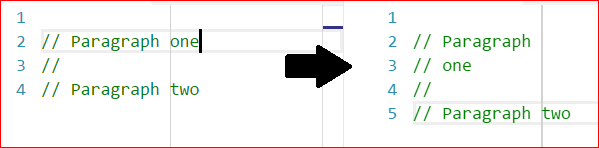
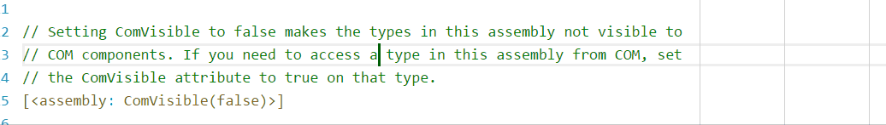

Settings: VS Code
Add these settings to your user or workspace settings file. (File -> Preferences -> Settings).
Additionally, all settings work as language-specific settings (see below).
Wrapping width
You can set the column to wrap at directly with the rewrap.wrappingColumn setting. This takes precedence over other options.
{
// Wraps after 72 characters
"rewrap.wrappingColumn": 72
}Alternatively, you can wrap to rulers.
Thirdly, if neither of the above two settings are present, VS Code's "editor.wordWrapColumn" setting is used. This has a default of 80.
Wrapping whole or parts of comments
With wholeComment:true (default), Rewrap will wrap a whole comment block when a text cursor is inside it. This is how Rewrap has traditionally behaved.
{
"rewrap.wholeComment": true
}But with wholeComment:false, Rewrap will only wrap that paragraph within the comment.
{
"rewrap.wholeComment": false
}
(Here the second paragraph is not wrapped)
Note: This setting only affects empty selections. You can always manually select the lines to wrap.
Double sentence spacing
The wrap/fill commands in Vim and Emacs have another feature, where if lines end with a period (or ? or !), two spaces will be added after that sentence when the paragraph is re-wrapped. This is not enabled by default, but you can enable it with a setting.
{
"rewrap.doubleSentenceSpacing": true
}Reformat (experimental)
This is an experimental setting that reformats paragraph indents when wrapping. More info here.
Language-specific settings
This example sets the wrapping at column 72 for Python, with doubleSentenceSpacing on, and the wrapping column at 90 for Javascript.
{
"[python]": {
"editor.rulers": [72, 79],
"rewrap.doubleSentenceSpacing": true
},
"[javascript]": {
"editor.rulers": [90]
}
}VS Code has a helper command for adding language sections to your settings file: press F1 and search for Preferences: Configure Language Specific Settings....
Notes:
- Language-specific settings for extensions are not officially supported in vscode yet, so you will get some warnings in the settings.json file, but it will still work.
- Be aware that a global
rewrap.wrappingColumnsetting will take precedence over a language-specificeditor.rulerssetting.
Wrapping to rulers
To enable wrapping to rulers, the rewrap.wrappingColumn setting must not be set.
If you have a ruler set up in VS Code, Rewrap will wrap to that ruler. If you have multiple rulers, you can choose which ruler to wrap to while editing.
Just press Alt+Q multiple times to wrap to each ruler in turn. The ruler chosen is then remembered for that document for the rest of the session. It cycles through the rulers in the order in which they appear in settings; so if you have a most commonly used ruler, you probably want to put that first.
{
"editor.rulers": [80, 72, 100]
}Like all other settings, rulers can also be set per-language.